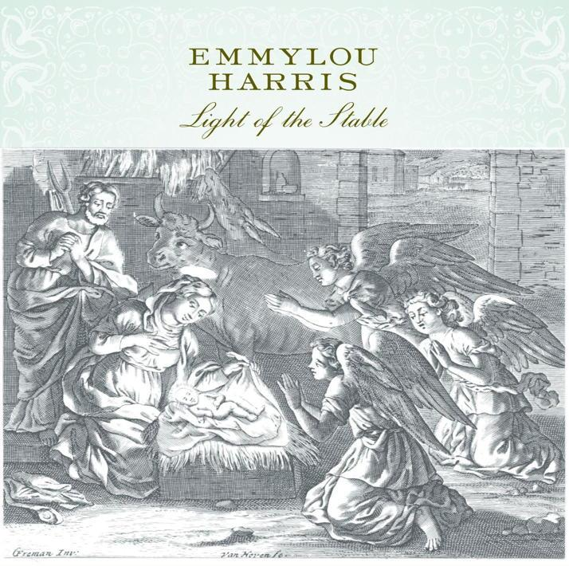

Christmas Time's A-Coming
18 Dec 2020 · 3 min read
topics: Christmasconnectionparenthood

This is a bluegrass song written by Bell Labs engineer and bluegrass fiddler Benjamin “Tex” Logan, and first recorded by Bill Monroe in 1951.
This song has a similar theme to “Christmas Time Back Home”, but has a very different feel to it. Whereas “Christmas Time Back Home” is full of yearning, this song always seems to me to be full of sheer joy.
Note the song's unusual construction. It starts with what we would typically call the chorus, and then launches into the first verse. But then after the verse, we get a new chorus, followed by the original chorus, and both of these are then repeated after each successive verse.
I love the pacing of the song. The first chorus expresses quiet anticipation, the verse paints a picture of the beloved country home, and the second chorus then seems to cut loose with pure joy. The singer claims at one point that he “can't walk for running,” and you can feel this in the music.
Different performers seem to put the verses in different orders, but otherwise the lyrics remain fairly constant from one performance to another.
Forgive the repetition, but I'll just put down all the lyrics, including the choruses, to make sure the song's construction is clear.
Christmas Time's A-Coming!
Christmas Time's A-Coming.
Christmas Time's A-Coming,
And I know I'm going home.Snow flakes a-falling!
My old home's a-calling.
Tall pines a-humming,
Christmas Time's A-Coming.Can't you hear them bells ringing, ringing,
Joy to all, hear them singing,
When it's snowing, I'll be going,
Back to my country home.Christmas Time's A-Coming!
Christmas Time's A-Coming.
Christmas Time's A-Coming,
And I know I'm going home.White candles burning,
My old heart's a-yearning,
For the folks at home when
Christmas Time's A-Coming.Can't you hear them bells ringing, ringing,
Joy to all, hear them singing,
When it's snowing, I'll be going,
Back to my country home.Christmas Time's A-Coming
Christmas Time's A-Coming
Christmas Time's A-Coming
And I know I'm going home.Holly's in the window,
Home where the wind blows,
Can't walk for running,
Christmas Time's A-Coming.Can't you hear them bells ringing, ringing,
Joy, joy, hear them singing,
When it's snowing, I'll be going,
Back to my country home.Christmas Time's A-Coming
Christmas Time's A-Coming
Christmas Time's A-Coming
And I know I'm going home.Christmas Time's A-Coming
Christmas Time's A-Coming
Christmas Time's A-Coming
And I know I'm going home.
I first heard this song on the Christmas Time Back Home album, as performed by Larry Sparks, and still think this is a fine version of the song. But the one I'll recommend to you today is by Emmylou Harris, and can be found on her excellent album, The Light of the Stable.
Next: “Boogie Woogie Santa Claus” by Mabel Scott
Or see the complete list of Christmas Favorites from The Practical Utopian.